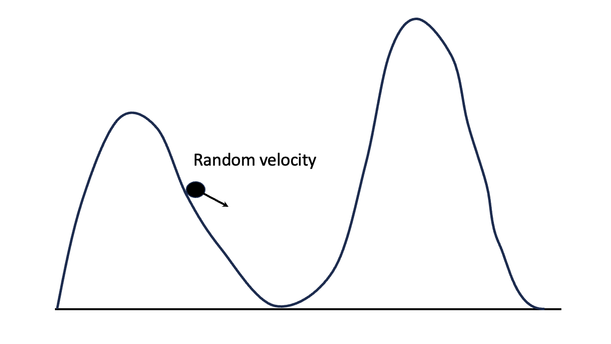

max_iter <- 100
# Data
y <- c(28, 8, -3, 7, -1, 1, 18, 12)
sig2 <- c(15, 10, 16, 11, 9, 11, 10, 18)^2
# Variational parameter
var_par <- list(M_alpha = matrix(0, nrow = max_iter, ncol = 8),
S2_alpha = matrix(1, nrow = max_iter, ncol = 8),
M_mu = rep(0, max_iter),
S2_mu = rep(1, max_iter),
B_tau = rep(1, max_iter))
for (i in 2:max_iter){
for(j in 1:8){
var_par$M_alpha[i, j] <- (var_par$B_tau[i-1] * y[j] + 3.5 * sig2[j] * var_par$M_mu[i-1]) /
(3.5 * sig2[j] + var_par$B_tau[i-1])
var_par$S2_alpha[i, j] <- var_par$B_tau[i-1] * sig2[j] /
(3.5 * sig2[j] + var_par$B_tau[i-1])
}
var_par$M_mu[i] <- mean(var_par$M_alpha[i, ])
var_par$S2_mu[i] <- var_par$B_tau[i-1] / 28
var_par$B_tau[i] <- 0.5*sum(var_par$S2_alpha[i, ]) +
0.5*sum(var_par$M_alpha[i, ]^2) -
sum(var_par$M_alpha[i, ]) * var_par$M_mu[i] +
4*var_par$S2_mu[i] +
4*var_par$M_mu[i]^2
}Lecture 08: Hamiltonian Monte Carlo and Variational Inference
Chun-Hao Yang
Motivation
\[ \newcommand{\mc}[1]{\mathcal{#1}} \newcommand{\R}{\mathbb{R}} \newcommand{\E}{\mathbb{E}} \renewcommand{\P}{\mathbb{P}} \newcommand{\var}{{\rm Var}} % Variance \newcommand{\mse}{{\rm MSE}} % MSE \newcommand{\bias}{{\rm Bias}} % MSE \newcommand{\cov}{{\rm Cov}} % Covariance \newcommand{\iid}{\stackrel{\rm iid}{\sim}} \newcommand{\ind}{\stackrel{\rm ind}{\sim}} \renewcommand{\choose}[2]{\binom{#1}{#2}} % Choose \newcommand{\chooses}[2]{{}_{#1}C_{#2}} % Small choose \newcommand{\cd}{\stackrel{d}{\rightarrow}} \newcommand{\cas}{\stackrel{a.s.}{\rightarrow}} \newcommand{\cp}{\stackrel{p}{\rightarrow}} \newcommand{\bin}{{\rm Bin}} \newcommand{\ber}{{\rm Ber}} \DeclareMathOperator*{\argmax}{argmax} \DeclareMathOperator*{\argmin}{argmin} \]
- In theory, the Metropolis algorithm (with an arbitrary proposal) works for any distribution in any dimension.
- In practice, the Metropolis algorithm is inefficient for high-dimensional distributions.
- Current research in MCMC focuses on finding good proposals to speed-up the algorithm, together with theoretical guarantees, e.g., making sure that the chain converges to the target distribution.
- In this lecture, we will introduce two popular MCMC algorithms: Hamiltonian Monte Carlo (HMC) and No-U-Turn Sampler (NUTS).
- These two algorithms are the ones used in the
Stansoftware.
A few words about acceptance rate
Ideally, we want the acceptance rate to be far from 0 and 1.
- If the acceptance rate is too low, the Markov chain is not moving.
- If the acceptance rate is too high, the Markov chain is only exploring the high-density region.
Adaptive MCMC
- In the original Metropolis algorithm, the proposal distribution is fixed.
- This can be inefficient, since after some exploration, we gain some knowledge about the target distribution, and we can use this knowledge to improve the proposal distribution.
- This can be easily implemented, e.g., reducing the variance of Gaussian proposal every 100 iterations.
- However, the theoretical analysis is complicated since the Markov chain is no longer time-homogeneous.
- Can we assure that the adaptive Markov chain still converges to the target distribution?
Optimal Gaussian proposal
- Let \(\pi\) be a distribution supported on \(\Theta \subseteq \mathbb{R}^d\).
- We want to sample from \(\pi\) using Metropolis algorithm with a Gaussian proposal \(N_d(\theta^{(t-1)}, \Xi)\).
- What is the optimal choice of \(\Xi\)?
- What do we mean by optimal in MCMC? We want the fastest convergence of the Markov Chain.
- Roberts & Rosenthal (2001)1 showed that, under some conditions on \(\pi\), the optimal choice is \[ \Xi = \frac{2.38^2}{d} \Sigma_{\pi}, \] where \(\Sigma_{\pi}\) is the covariance matrix of \(\pi\). But we don’t know \(\Sigma_{\pi}\)!
Adaptive Random Walk Metropolis
- Algorithm:
- At \(t\)th iteration, compute \(\hat{\Sigma}_n\) using \(\theta^{(1)}, \ldots, \theta^{(t-1)}\).
- Sample \(\theta^*\) from \(N_d\left(\theta^{(t-1)}, \frac{(2.38)^2}{d}\hat{\Sigma}_n\right)\).
- Compute the acceptance ratio \(\rho(\theta^{(t-1)}, \theta^{*})=\min\left\{\frac{\pi(\theta^* \mid x)}{\pi(\theta^{(t-1)} \mid x)}, 1\right\}\).
- Set \[ \theta^{(t)}= \begin{cases}\theta^* & \text { with prob. } \rho(\theta^{(t-1)}, \theta^{*}) \\ \theta^{(t-1)} & \text { with prob. } 1-\rho(\theta^{(t-1)}, \theta^{*}).\end{cases} \]
- The simplest choice of \(\hat{\Sigma}_n\) is the sample covariance matrix.
- However, it is not a good choice in high dimensions.
- Google: ``High-dimensional covariance estimation’’!
Does it work?
- The adaptive RWM works well in practice, but the theoretical analysis is difficult.
- Adaptation: the change of proposal distribution over time.
- For an adaptive MCMC algorithm to work, the adaptation must satisfy two requirements:
- Diminishing adaptation: the adaptation must diminish over time.
- Containment: the time to stationary from \(X_t\) is bounded, if we fix the adaptation at \(t\), i.e., stop changing proposal distribution after time \(t\).
Metropolis-adjusted Langevin algorithm (MALA)
- Proposal: \(\theta^{(t)} \sim N_d\left(\theta^{(t-1)} + \frac{1}{2}\Sigma\nabla\log\pi(\theta^{(t-1)}), \Sigma\right)\)
- This proposal is inspired by Langevin diffusion, and is non-symmatric.
- You can also make MALA adaptive by replacing \(\Sigma\) with \(\frac{(2.38)^2}{d}\hat{\Sigma}_n\).
Hamiltonian Monte Carlo (HMC)1
- The main reason that random walk Metropolis is inefficient is that it explores the parameter space by diffusing around.
- Hamiltonian dynamics can be used to produce distant proposals for the Metropolis algorithm.
- The idea behind HMC:

Hamiltonian dynamics
- Let \(p\) be a particle with position \(x\) and velocity \(v\).
- The Hamiltonian of \(p\) is the sum of its potential energy and kinetic energy: \[ H(x, v) = U(x) + K(v). \]
- The potential energy \(U(x)\) is proportional to the height at \(x\).
- The kinetic energy is \(K(v) = \frac{1}{2}mv^Tv\), where \(m\) is the mass of the particle \(p\).
- The momentumof \(p\) is defined as \(y = mv\) and hence \(K(y) = \frac{y^Ty}{2m}\).
- The total energy is constant:
- when \(p\) moves upward, potential energy increases and kinetic energy decreases;
- when \(p\) moves downward, potential energy decreases and kinetic energy increases.
Hamiltonian dynamics
- Let \(x(t)\) be the position of \(p\) at time \(t\) and \(y(t)\) be the momentum of \(p\) at time \(t\).
- Define the potential energy to be \(U(x) = -\log \pi(x)\), where \(\pi(x)\) is our target distribution.
- Hence the Hamiltonian is \[ H(x, y) = -\log \pi(x) + \frac{y^Ty}{2m}. \]
- In Hamiltonian dynamics, the pair \((x(t), y(t))\) satisfies a set of differential equations, given by \[ \begin{aligned} \frac{dx_i}{dt} &= \frac{\partial H}{\partial y_i} = \frac{\partial K}{\partial y_i} = \frac{y_i}{m},\\ \frac{dy_i}{dt} &= -\frac{\partial H}{\partial x_i} = -\frac{\partial U}{\partial x_i} = \frac{\partial \log \pi(x)}{\partial x_i}, \quad i = 1,\ldots,d. \end{aligned} \]
HMC
- The HMC is actually sampling from \[ p(x, y) \propto \exp(-H(x, y)) = \pi(x)\exp\left(-\frac{y^Ty}{2m}\right). \]
- That is, \(X \sim \pi\) and \(Y \sim N(0, m^{-1}I)\) are independent.
- At \(n\)th iteration, we randomly assign a momentum \(y \sim N(0, m^{-1}I)\) to \(x^{(n-1)}\).
- Let \((x(0), y(0)) = (x^{(n-1)}, y)\).
- Evolve \((x(0, y(0)))\) for time \(t\) according to Hamiltonian dynamics and get \((x(t), y(t))\).
- Accept \((x(t), y(t))\) with probability \[ \rho = \frac{\exp(-H(x(t), y(t)))}{\exp(-H(x(0), y(0)))} = \exp(-H(x(t), y(t)) + H(x^{(n-1)}, y)). \]
- If accepted, set \(x^{(n)} = x(\delta)\); otherwise, set \(x^{(n)} = x^{(n-1)}\).
Evolution of Hamiltonian dynamics
- Given \((x(0), y(0))\), we can evolve \((x(t), y(t))\) for time \(t\) by solving the Hamiltonian equations.
- The most natural way is Euler’s method: \[ \begin{aligned} x_i(t + \epsilon) &= x_i(t) + \epsilon\frac{dx_i}{dt}(t) = x_i(t) + \epsilon \frac{y_i(t)}{m},\\ y_i(t + \epsilon) &= y_i(t) + \epsilon\frac{dy_i}{dt}(t) = y_i(t) - \epsilon \frac{\partial}{\partial x_i}\log \pi(x(t)). \end{aligned} \]
- It turns out that the Euler method is inaccurate, and the most widely used method is the leapfrog method.
Leapfrog method
- The leapfrog method maps \((x(t), y(t))\) to \((x(t+\epsilon), y(t+\epsilon))\) through the following steps:
- \(y(t + \epsilon/2) = y(t) - \frac{\epsilon}{2}\nabla_x \log \pi(x(t))\);
- \(x(t + \epsilon) = x(t) + \epsilon\frac{y(t + \epsilon/2)}{m}\);
- \(y(t + \epsilon) = y(t + \epsilon/2) - \frac{\epsilon}{2}\frac{\partial}{\partial x}\log \pi(x(t + \epsilon))\).
- In HMC, the leapfrog method evolves \((x(0), y(0))\) for \(L\) iterations.
General HMC algorithm
- Input: un-normalized density \(\pi(x)\).
- Tuning parameters: step size \(\epsilon\), number of steps \(L\), mass matrix \(M\).
- Initialize \(x^{(0)}\).
- for \(i = 1, \ldots, n\):
- generate \(y^{(0)} \sim N(0, M)\);
- set \(\tilde{x} \leftarrow x^{(i-1)}\), \(\tilde{y} \leftarrow y^{(0)}\);
- for \(j = 1, \ldots, L\):
- \(\tilde{y} \leftarrow \tilde{y} - \frac{\epsilon}{2}\nabla_x \log \pi(\tilde{x})\);
- \(\tilde{x} \leftarrow \tilde{x} + \epsilon M^{-1}\tilde{y}\);
- \(\tilde{y} \leftarrow \tilde{y} - \frac{\epsilon}{2}\nabla_x \log \pi(\tilde{x})\);
- \(u \sim \text{Unif}(0, 1)\);
- if \(u < \exp(-H(\tilde{x}, \tilde{y}) + H(x^{(i-1)}, y^{(0)}))\):
- \(x^{(i)} \leftarrow \tilde{x}\);
- else:
- \(x^{(i)} \leftarrow x^{(i-1)}\);
Remarks
- Random walk Metropolis can fail badly when the target distribution is multi-modal because it uses proposals that are unrelated to the target distribution.
- HMC makes better use of what is known about the target distribution by using the gradient of the log density.
- HMC can only be used to sample from continuous distributions whose density can be evaluated (up to a normalizing constant) and whose gradient can be computed.
- In particular, HMC cannot be used to sample from discrete distributions.
- Although we did not show in the class, the HMC indeed has a stationary distribution \(\pi\).
- See Neal (2011) for more details.
Tuning parameters
There are three tuning parameters in HMC: step size \(\epsilon\), number of steps \(L\), and mass matrix \(M\).
Small \(\epsilon\):
- the leapfrog approximation is good
- higher acceptance rate
Large \(L\):
- bigger moves
- smaller correlations between successive samples
- more computation
Neal (2011) recommends setting \(\epsilon\) and \(L\) such that the acceptance rate is about 0.65.
The mass matrix \(M\) is usually set to be the identity matrix.
No-U-Turn Sampler (NUTS)1
- The hand-tuning of \(\epsilon\) and \(L\) is tedious and time-consuming.
- The No-U-Turn Sampler (NUTS) is an extension of HMC that eliminates the need to set the number of steps \(\epsilon\) and \(L\).
- The main ides behind NUTS is to simulate a trajectory of the Hamiltonian dynamics until it turns back on itself.
- See Hoffman and Gelman (2014) for more details.
- Betancourt (2017) also provides a nice introduction to HMC and NUTS.
Distributional Approximation
Motivation
- We have been focusing on simulating samples from the posterior distribution to make inference.
- However, the sampling-based approach will be very inefficient for large problems, i.e., a problem with hundreds or thousands of parameters.
- In such cases, we might want to approximate the posterior distribution with a simpler distribution.
- That is, we trade accuracy for efficiency.
- The simplest approach is modal-approximation.
- However, this approach is not very flexible and does not scale well to high-dimensional problems.
- There are many other approaches, and we focus on one of them: variational inference.
Variational inference
- Variational Bayes (VB) is an algorithmic framework for approximating joint distributions.
- Suppose we want to approximate the posterior distribution \(\pi(\theta \mid y)\) with a simpler distribution \(q(\theta)\) by minimizing the Kullback-Leibler divergence \[ \text{KL}(q\|\pi) = \int \log\frac{q(\theta)}{\pi(\theta \mid y)} q(\theta)d\theta = \E_q\left[\log\frac{q(\theta)}{\pi(\theta \mid y)}\right]. \]
- The difficulties are:
- \(\pi(\theta \mid y)\) is available only up to a normalizing constant;
- we cannot easily take posterior draws from \(\pi(\theta \mid y)\);
- we cannot easily compute expectations of interest, \(\E(h(\theta) \mid y)\).
- Hence we are not able to minimize the KL divergence directly.
Evidence Lower Bound (ELBO)
- The marginal distribution of \(y\) is given by \[ p(y) = \int \pi(y, \theta) d\theta = \int \pi(y \mid \theta) \pi(\theta) d\theta. \]
- Then the evidence (log of marginal) is \[\begin{align*} \log p(y) & = \log \int p(y, \theta) d\theta = \log \int \frac{p(y, \theta)}{q(\theta)} q(\theta) d\theta\\ & = \log\left(\E_{q}\left[\frac{\pi(y, \theta)}{q(\theta)}\right]\right) \geq \E_q\left[\log p(y, \theta)\right] - \E_q\left[\log q(\theta)\right]. \end{align*}\]
- The last inequality is due to Jensen’s inequality.
- The quantity \(\E_q\left[\log p(y, \theta)\right] - \E_q\left[\log q(\theta)\right]\) is called the evidence lower bound (ELBO).
Evidence Lower Bound (ELBO)
- The KL divergence can be written as \[\begin{align*} \text{KL}(q \| \pi) & = \E_q\left[\log\frac{q(\theta)}{\pi(\theta \mid y)}\right] \\ & = \E_q\left[\log q(\theta)\right] - \E_q\left[\log \pi(\theta \mid y)\right] \\ & = \E_q\left[\log q(\theta)\right] - \E_q\left[\log p(y \mid \theta)\pi(\theta)\right] + \log p(y)\\ & = - \text{ELBO}(q) + \log p(y). \end{align*}\]
- Hence minimizing the KL divergence is equivalent to maximizing the ELBO.
Class of approximate distributions
- Now we need to choose a class \(\mc{Q}\) of distributions \(q(\theta)\) to approximate the posterior distribution \(\pi(\theta \mid y)\).
- We want the \(\mc{Q}\) to be:
- flexible enough to approximate \(\pi(\theta \mid y)\) well;
- simple enough to be tractable;
- the ELBO can be easily computed.
- The class \(\mc{Q}\) is often a parametric family, i.e., \[ \mc{Q} = \{q(\theta \mid \phi): \phi \in \Phi\}. \] and \(\phi\) is called the variational parameter.
Mean-field variational family
- The simplest choice of \(\mc{Q}\) is the mean-field variational family: \[ \mc{Q}_{\text{MF}} = \left\{q(\theta \mid \phi) = \prod_{j=1}^d q_j(\theta_j \mid \phi_j): \phi = (\phi_1, \ldots, \phi_d) \in \Phi\right\}. \]
- The mean-field variational family assumes that the parameters are independent.
- Obviously, this family does not contain the true posterior distribution.
- However, it is often used in practice because it is simple and easy to compute.
- We can also partition \(\theta\) into \(K\) blocks and assume that the parameters between different blocks are independent.
Maximizing ELBO
- The ELBO is given by \(\text{ELBO}(q) = \E_q\left[\log p(y, \theta)\right] - \E_q\left[\log q(\theta)\right]\).
- For \(q \in \mc{Q}_{\text{MF}}\), the entropy term is \[ \E_q\left[\log q(\theta)\right] = \E_q\left[\sum_{j=1}^d \log q_j(\theta_j \mid \phi_j)\right] = \sum_{j=1}^d \E_{j}\left[\log q_j(\theta_j \mid \phi_j)\right] \] where \(\E_j\) is the expectation with respect to \(q_j\).
- The first term is \[\begin{align*} \E_q\left[\log p(y, \theta)\right] &= \int \log \pi(y, \theta) \prod_{j=1}^d q_j(\theta_j) d\theta_1\cdots d\theta_d \\ & = \int \E_{-j}\left[\log \pi(y, \theta)\right] q_j(\theta_j) d\theta_j \\ \end{align*}\]
Maximizing ELBO
- The ELBO is \[ \mc{L}(q_1, \ldots, q_d) = \int \E_{-j}\left[\log \pi(y, \theta)\right] q_j(\theta_j) d\theta_j - \sum_{j=1}^d \E_{j}\left[\log q_j(\theta_j \mid \phi_j)\right]. \]
- We need to find \(q_1, \ldots, q_d\) to maximize \(\mc{L}(q_1, \ldots, q_d)\) subject to the constraints \(\int q_j(\theta_j) d\theta_j = 1\).
- Use Lagrange multipliers, take ``functional derivative’’ with respect to \(q_j\), set it to zero, and we have \[ \log q_j(\theta_j) = \E_{-j}\left[\log \pi(y, \theta)\right] + \text{const}. \]
- Hence the optimal \(q_j\) is \[ q^{*}_j(\theta_j) \propto \exp\left(\E_{-j}\left[\log \pi(y, \theta)\right]\right). \]
Example: 8-school problem
- The model in the eight-school problem is \[\begin{align*} Y_i & \ind N(\alpha_i, \sigma_i^2), \quad i = 1, \ldots, 8 \\ \alpha_i & \iid N(\mu, \tau)\\ \pi(\mu, \tau) & \propto 1. \end{align*}\] (It can be shown that the posterior is proper.)
- Let \(\theta = (\alpha_1, \ldots, \alpha_8, \mu, \tau)\).
- The log posterior is \[ \log \pi(\theta \mid y) = -\frac{1}{2} \sum_{j=1}^8 \frac{\left(y_j-\alpha_j\right)^2}{\sigma_j^2} - 8 \log \tau-\frac{1}{2} \frac{1}{\tau^2} \sum_{j=1}^8\left(\alpha_j-\mu\right)^2 + \text{const}. \]
- We consider the mean-field approximation \(q(\theta) = q(\alpha_1) \cdots q(\alpha_8) q(\mu) q(\tau)\).
Mean-field approximation: \(\alpha_j\)
- Averaging over all the parameters other than \(\alpha_j\), we have \[ \E_{-\alpha_j} \log p(\theta \mid y)=-\frac{1}{2} \frac{\left(y_j-\alpha_j\right)^2}{\sigma_j^2}-\frac{1}{2} \E_{-\alpha_j}\left(\frac{1}{\tau^2}\right) \E_{-\alpha_j}\left(\left(\alpha_j-\mu\right)^2\right)+\text{constant.} \] which is a quadratic function of \(\alpha_j\).
- Hence the optimal \(q(\alpha_j)\) is a Gaussian distribution \[ g\left(\alpha_j\right)=N\left(\alpha_j \middle| \frac{\frac{1}{\sigma_j^2} y_j+\E_{-\alpha_j}\left(\frac{1}{\tau^2}\right) \E_{-\alpha_j}(\mu)}{\frac{1}{\sigma_j^2}+\E_{-\alpha_j}\left(\frac{1}{\tau^2}\right)}, \frac{1}{\frac{1}{\sigma_j^2}+\E_{-\alpha_j}\left(\frac{1}{\tau^2}\right)}\right). \]
Mean-field approximation: \(\mu\)
- Averaging over all the parameters other than \(\mu\), we have \[ \E_{-\mu} \log p(\theta \mid y) = -\frac{1}{2} \E_{-\mu}\left(\frac{1}{\tau^2}\right) \sum_{j=1}^8\left(\mu - \E_{-\mu} \left(\alpha_j\right)\right)^2+\text{constant.} \]
- This is the logarithm of a normal density function: \[\begin{align*} g(\mu)=N\left(\mu \middle| \frac{1}{8} \sum_{j=1}^8 \E_{-\mu}\left(\alpha_j\right), \frac{1}{8} \frac{1}{\E_{-\mu}\left(\frac{1}{\tau^2}\right)}\right) \end{align*}\]
Mean-field approximation: \(\tau\)
Averaging over all the parameters other than \(\tau\), we have \[ \E_{-\tau} \log p(\theta \mid y) = -8 \log \tau -\frac{1}{2} \frac{1}{\tau^2} \sum_{j=1}^8 \E_{-\tau}\left(\left(\alpha_j-\mu\right)^2\right)+\text{constant.} \]
This is the logarithm of an inverse-gamma density function: \[ g(\tau^2) = \text{Inv-Gamma}\left(\tau^2 \middle| \frac{7}{2}, \frac{1}{2} \sum_{j=1}^8 \E_{-\tau}\left(\left(\alpha_j-\mu\right)^2\right)\right). \]
Summarizing the mean-field approximation
- The mean-field approximation is \[\begin{align*} \alpha_j & \sim N(M_{\alpha_j}, S^2_{\alpha_j})\\ \mu & \sim N(M_{\mu}, S^2_{\mu})\\ \tau^2 & \sim \text{Inv-Gamma}\left(\frac{7}{2}, B_{\tau}\right). \end{align*}\]
- Thus \[\begin{align*} \E_{-\alpha_j}(\tau^{-2}) & = \E_{-\mu}(\tau^{-2})= \frac{7}{2B_{\tau}}\\ \E_{-\mu}(\alpha_j) & = M_{\alpha_j}\\ \E_{-\tau}(\alpha_j-\mu)^2 & = S^2_{\alpha_j} + M^2_{\alpha_j} - 2M_{\alpha_j}M_{\mu}+ S^2_{\mu} + M^2_{\mu}. \end{align*}\]
Summarizing the mean-field approximation
Combining all the results we have
\[\begin{align*} M_{\alpha_j} & = \frac{\frac{1}{\sigma_j^2} y_j+\E_{-\alpha_j}\left(\frac{1}{\tau^2}\right) \E_{-\alpha_j}(\mu)}{\frac{1}{\sigma_j^2}+\E_{-\alpha_j}\left(\frac{1}{\tau^2}\right)} = \frac{\frac{1}{\sigma_j^2} y_j+\frac{3.5}{B_{\tau}} M_{\mu}}{\frac{1}{\sigma_j^2}+\frac{3.5}{B_{\tau}}} = \frac{B_{\tau} y_j + 3.5\sigma_j^2 M_{\mu}}{3.5\sigma_j^2 + B_{\tau}}\\ S^2_{\alpha_j} & = \frac{1}{\frac{1}{\sigma_j^2}+\E_{-\alpha_j}\left(\frac{1}{\tau^2}\right)} = \frac{1}{\frac{1}{\sigma_j^2}+\frac{3.5}{B_{\tau}}} = \frac{B_{\tau}\sigma_j^2}{3.5\sigma_j^2 + B_{\tau}}\\ M_{\mu} & = \frac{1}{8} \sum_{j=1}^8 \E_{-\mu}(\alpha_j) = \frac{1}{8} \sum_{j=1}^8 M_{\alpha_j}\\ S^2_{\mu} & = \frac{1}{8} \frac{1}{\E_{-\mu}\left(\frac{1}{\tau^2}\right)} = \frac{1}{8} \frac{1}{\frac{3.5}{B_{\tau}}} = \frac{B_{\tau}}{28}\\ B_{\tau} & = \frac{1}{2} \sum_{j=1}^8 \E_{-\tau}\left(\left(\alpha_j-\mu\right)^2\right) = \frac{1}{2} \sum_{j=1}^8 \left(S^2_{\alpha_j} + M^2_{\alpha_j} - 2M_{\alpha_j}M_{\mu}+ S^2_{\mu} + M^2_{\mu}\right) \end{align*}\]
R code
Results